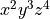
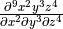
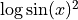
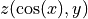
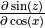
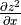
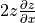
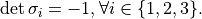
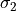
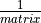

One of Pure’s distinguishing features as a term rewriting programming language
is that it makes the symbolic manipulation of expressions very easy and
convenient. It is thus a natural environment for hosting a full-featured
computer algebra system (CAS). Computer algebra systems are complex pieces of
software featuring advanced algorithms for simplification of algebraic
expressions, symbolic integration, equation solving and much more.
Reimplementing all these algorithms in Pure would be a major undertaking, to
say the least. A much better option is to interface to an existing CAS which
has already proven its worth to the scientific computing community, has been
tested extensively and is known to be both reliable and efficient.
Installation
Get the latest source from
https://bitbucket.org/purelang/pure-lang/downloads/pure-reduce-0.4.tar.gz.
You’ll need both the Reduce library (named reduce.so, reduce.dylib or
reduce.dll, depending on the system you have) and a Reduce image file
(reduce.img) to make this module work. A Makefile is included with this
package so that you can build these yourself from the Reduce sources. (In
principle, this only needs to be done once for the initial installation of
this module, but you may want to repeat this procedure every once in a while
to get the latest Reduce version.)
The full Reduce system is a big package, so we have packaged a stripped-down
version of the Reduce source which contains all the bits and pieces needed to
compile the Reduce library and image, and has also been patched up so that it
compiles cleanly on recent Linux systems. At the time of this writing, you can
find this package here:
(You may want to check the download section on the Pure website for newer
revisions of this package, since we may update the package from time to time
to the latest source from the Reduce svn repository.)
Unpack the reduce-algebra-csl tarball and move the resulting reduce-algebra
directory into the pure-reduce source directory. Run make and then (if
needed) make install in the pure-reduce directory (not in the
reduce-algebra directory!). You should also run make check which performs
a few tests in order to verify that the interface works ok (this can be done
without installing the package, but needs the Reduce image and library).
For convenience, the Makefile also has a make reduce target which builds a
minimal Reduce executable. If you use that option, make install installs
this executable along with the library and image files, so that you can then
run Reduce directly from the command line by just typing reduce. Please
note that this is a really minimalistic Reduce frontend which is most useful
for testing purposes. (If you want the full Reduce version then you can find
binary Reduce packages for various systems at SourceForge. But note that
neither the minimalistic nor the full Reduce frontend is required for the
pure-reduce module in any way.)
It is also possible to build the Reduce library and image directly from the
latest source in the Reduce svn repository. You can check out the repository
with the following command:
svn co svn://svn.code.sf.net/p/reduce-algebra/code/trunk reduce-algebra
This pulls down many hundreds of megabytes, so this may take a while. Once the
checkout is finished, you’ll end up with a reduce-algebra directory which you
can drop into the pure-reduce source directory and proceed with the
compilation as described above. Note that if you go that route then you should
be prepared to deal with compilation problems in the Reduce sources. Reduce is
a big and complicated software, so the svn sources are not always in a state
which guarantees smooth compilation on all supported systems. If you run into
problems then please consider using our streamlined reduce-algebra-csl package
instead.
Basic Examples
Here is a simple example showing how to start up Reduce and do some
calculations:
> using reduce;
Reduce (Free CSL version), 27-Sep-12 ...
> simplify $ df ((x+5)^3) x;
3*x^2+30*x+75
> simplify $ intg (exp (2*x)) x;
e^(2*x)/2
> simplify $ solve (x^2+7) x;
[x==sqrt 7*i,x==-sqrt 7*i]
Note that the result returned by simplify is always a quoted
expression. If the expression can be further reduced on the Pure side,
you’ll have to use Pure’s eval function to force its evaluation:
> using math;
> eval ans;
[x==0.0+:2.64575131106459,x==0.0+:-2.64575131106459]
The following example shows how you can do a simple plot using Reduce’s
gnuplot module:
> simplify $ plot [sin x/x, x=='(-20..20), terminal=="wxt"];
0
This pops up a wxWidgets window (terminal=="wxt") with a plot of the given
function in it, see the screenshot below. The x=='(-20..20) argument
specifies the desired range of the x variable (note that the range needs
to be quoted so that it gets through to Reduce rather than being evaluated on
the Pure side).
The same plot can be written to a PostScript file sinc.ps as follows:
> simplify $ plot [sin x/x, x=='(-20..20), terminal=="postscript", output=="sinc.ps"];
0
The lisp function can be used to execute Lisp code in the CSL
interpreter hosting the Reduce system. Here are some basic examples. Note
that, to be on the safe side, we just always quote the argument to
lisp here to prevent its evaluation on the Pure side.
> lisp ('plus 2 3);
5
> lisp ('car (list a b c d e));
a
> lisp ('cdr [a,b,[c,d],e]);
[b,[c,d],e]
Lisp’s truth values are t and nil; the latter is just the empty list,
so that’s what you get if a Lisp predicate evaluates to “false”:
> lisp ('lessp 5 3);
[]
> lisp ('greaterp 5 3);
t
Most simple kinds of Lisp calls should be doable that way, but don’t expect
any miracles; the lisp function is provided to access special
functionality in the “symbolic mode” of the Reduce system, not to turn Pure
into a full-featured Lisp frontend. The following example illustrates how you
can use the lisp function to declare an operator symbol and change or
query its properties:
> lisp ('operator [myop]);
[]
> lisp ('flag [myop] odd);
[]
> lisp ('prop myop);
[odd:t,simpfn:simpiden]
> simplify (myop (-x));
-myop x
If you find it awkward to evaluate Lisp forms in Pure, you can also achieve
the same with the declare function which covers most of the common
Reduce declarations that might be needed:
> declare operator myop;
[]
> declare odd myop;
[]
> simplify (myop (-x));
-myop x
For basic Pure-based usage of Reduce, it’s convenient to have a simple
read-eval-print loop which lets you type some declarations and expressions to
be simplified (in Pure syntax), and takes care of all the quoting and invoking
simplify for you. Here’s a little Pure script which does that:
using math, reduce, system;
/* You might want to replace this with the real readline if you have the
corresponding Pure module installed. See the red.pure script in the
distribution for details. */
myreadline prompt::string = fputs prompt stdout $$ fflush stdout $$ gets;
red = loop with
// A simplistic REPL.
loop = case myreadline "> " of
s::string = process s $$ loop if ~null s;
_ = () otherwise;
end;
// Get rid of trailing blanks and semicolons.
process s = process (init s) if any (==last s) [" ",";"];
// Process a declaration or REDUCE expression.
process s = case val s of
val _ = fputs "** syntax error\n" stderr if ~null lasterr;
on flag = reduce::switch (str flag) 1;
off flag = reduce::switch (str flag) 0;
x@(declare _ _) = eval x;
x = puts (str (simplify x)) otherwise;
end;
end;
Now you can run red at the Pure prompt and start typing the stuff you want
to evaluate, one expression or declaration per line. Enter an empty line or
Ctrl-D when you’re done to return to the Pure command prompt.
> red;
> df ((x+5)^3) x
3*x^2+30*x+75
> intg (exp (2*x)) x
e^(2*x)/2
> on rounded
> solve (x^2+7==17) x
[x==3.16227766016838,x==-3.16227766016838]
> off rounded
> solve (x^2+7==17) x
[x==sqrt 10,x==-sqrt 10]
> declare operator myop
> declare odd myop
> myop (-x)
-myop x
> plot [sin x/x, x==(-20..20), terminal=="wxt"]
0
> ^D
()
Note that we barely scratched the surface here; Reduce is a very complex
system with lots of capabilities. The following section explores some of these
areas in more detail.
Examples by Topic
This is a small excerpt from the REDUCE User’s Manual [REDUM],
translated to Pure syntax. For any details we refer to that document. With
this guide it should be straightforward to translate back and forth between
Pure and REDUCE syntax for the invocation of REDUCE functions. The one thing
you have to keep in mind is that Pure uses curried notation for function
applications, so where a function is invoked as f(x,y,z) in REDUCE, you’ll
have to call it as f x y z in Pure (with parentheses around each argument
which is a compound expression).
The REDUCE User’s Manual as well as the documentation of each package and
other valuable information may be found at:
http://www.reduce-algebra.com/documentation.htm
Differentiation
The operator df is used to represent partial differentiation with respect
to one or more variables.
-
df exprn [var <num>]+
Differentiation of the function  with respect to
, two, three and four times respectively, i.e
:
> simplify $ df (x^2*y^3*z^4) x 2 y 3 z 4 ;
288
The derivative of :
> simplify $ df (log(sin x)^2) x;
2*cos x*log (sin x)/sin x
Note the parentheses.
Suppose . Let’s calculate  and  :
> declare depend [z,cos x,y];
[]
> simplify (df (sin z) (cos x));
cos z*df z (cos x)
> simplify (df (z^2) x);
2*df z x*z
Note how to declare dependencies.
The results are and ,
respectively, as expected.
Integration
INT is an operator in REDUCE for indefinite integration using a
combination of the Risch-Norman algorithm and pattern matching.
-
intg exprn var
Note that in Pure the operator is called intg in order not to clash
with the int conversion function.
Example 1:
> simplify $ intg (1/(a*x+b)) x;
log (a*x+b)/a
Example 2:
> I a b n = simplify $ intg (x^2*(a*x+b)^n) x;
> I a b n;
((a*x+b)^n*a^3*n^2*x^3+3*(a*x+b)^n*a^3*n*x^3+2*(a*x+b)^n*a^3*x^3+
(a*x+b)^n*a^2*b*n^2*x^2+(a*x+b)^n*a^2*b*n*x^2-2*(a*x+b)^n*a*b^2*
n*x+2*(a*x+b)^n*b^3)/(a^3*n^3+6*a^3*n^2+11*a^3*n+6*a^3)
> I a b 0 ;
x^3/3
> I 0 b n;
b^n*x^3/3
> I a 0 k;
x^k*a^k*x^3/(k+3)
Example 3:
> simplify $ intg (sqrt(x+sqrt(x^2+1))/x) x ;
intg (sqrt (sqrt (x^2+1)+x)/x) x
Apparently no solution was found. There is a package ALGINT in REDUCE
which specifically deals with algebraic functions. The REDUCE User’s Manual
[REDUM] says:
This package [...] will analytically integrate a wide range
of expressions involving square roots where the answer exists in that class
of functions. It is an implementation of the work described in
J.H. Davenport [LNCS102].
> reduce::load "algint" ;
0
> simplify $ intg (sqrt(x+sqrt(x^2+1))/x) x ;
atan ((sqrt (sqrt (x^2+1)+x)*sqrt (x^2+1)-sqrt (sqrt (x^2+1)+x)*x-sqrt
(sqrt (x^2+1)+x))/2)+2*sqrt (sqrt (x^2+1)+x)+log (sqrt (sqrt
(x^2+1)+x)-1)-log (sqrt (sqrt (x^2+1)+x)+1)
Note how to load packages.
Length, Map and Select
LENGTH is a generic operator for finding the length of compound objects.
Besides lists and matrices, this also includes algebraic expressions. The
MAP and SELECT operators let you manipulate such objects by applying a
function to each element of the structure, or by picking the elements
satisfying a given predicate function. Thus these operations serve pretty much
the same purposes as # (or dim), map and
filter in Pure, but in REDUCE they also work with the operands of an
algebraic expression.
-
length exprn
-
map fun exprn
-
select fun exprn
> simplify $ length (a+b);
2
> simplify $ length (x^n+a*x+2);
3
> simplify $ 'map sqrt [1,2,3];
[1,2^(1/2),3^(1/2)]
> simplify $ 'map log [x^n,x^m,sin x];
[log (x^n),log (x^m),log (sin x)]
Note that map must be quoted if we want to evaluate it in REDUCE, since
it’s also a function in Pure. In this case, we might as well do the
calculation using Pure’s map; the result is exactly the same.
> simplify $ map sqrt [1,2,3];
[1,2^(1/2),3^(1/2)]
> simplify $ map log [x^n,x^m,sin x];
[log (x^n),log (x^m),log (sin x)]
If the function to be applied in calls to MAP or SELECT is a compound
expression, it must either contain a single free variable (indicated with the
~ prefix, e.g.: ~w) or a replacement rule of the form var =>
exprn. In either case the current elements are substituted for the free
variable when the function is applied.
> simplify $ 'map (y=>df y x) [x^n,x^m,sin x];
[x^n*n/x,x^m*m/x,cos x]
> simplify $ 'map (y=>intg y x) [x^n,x^m,sin x];
[x^n*x/(n+1),x^m*x/(m+1),-cos x]
> simplify $ select (evenp (deg (~w) y)) ((x+y)^5);
x^5+10*x^3*y^2+5*x*y^4
> simplify $ select (w=>evenp (deg w y)) ((x+y)^5);
x^5+10*x^3*y^2+5*x*y^4
Contrast this with Pure where the function argument to map is often
specified as a lambda:
> simplify $ map (\y->df y x) [x^n,x^m,sin x];
[x^n*n/x,x^m*m/x,cos x]
> simplify $ map (\y->intg y x) [x^n,x^m,sin x];
[x^n*x/(n+1),x^m*x/(m+1),-cos x]
In principle, the same correspondences also hold between REDUCE’s select
and Pure’s filter. For instance, consider:
> simplify $ select (w=>evenp (deg w x)) [2*x^2,3*x^3,4*x^4];
[2*x^2,4*x^4]
The equivalent Pure filter is:
> filter (\w->simplify $ evenp (deg w x)) [2*x^2,3*x^3,4*x^4];
[2*x^2,4*x^4]
Note that REDUCE is now being called inside the predicate function, the rest
of the processing is done in Pure.
Of course, if you want to apply map, filter and similar Pure
functions to an algebraic expression, you’ll first have to extract its
components as a list. Here’s a little Pure function which mimics the way in
which MAP and SELECT decompose an expression:
terms x = case x of
f@_ u v = collect f x with
// Collect the operands of variadic Reduce operators.
collect f (f@_ u v) = collect f u+collect f v;
collect f x = [x] otherwise;
end if any (===eval f) [(+),(-),(*),min,max];
= [u,v] if arity f == 2;
_ = [x] otherwise;
end;
For instance, consider:
> simplify $ 'map (w=>w+1) (df ((x+y)^3) x);
3*x^2+6*x*y+3*y^2+3
With the help of terms we can also do this using Pure’s map as
follows:
> map (+1) $ terms (simplify (df ((x+y)^3) x));
[3*x^2+1,6*x*y+1,3*y^2+1]
> simplify $ foldl (+) 0 ans;
3*x^2+6*x*y+3*y^2+3
While the REDUCE version is shorter and only involves a single call to
simplify, with a little bit of programming the Pure solution can be
made just as convenient. More importantly, this method easily generalizes to
other list operations. This makes it possible to apply Pure’s full arsenal of
generic list functions which goes beyond what’s available in REDUCE.
Partial Fractions
The PF operator transforms an expression into a list of partial fractions
with respect to the main variable. PF does a complete partial fraction
decomposition.
-
pf expr var
Let us find the decomposition of:
> let f = 2/((x+1)^2*(x+2));
> simplify $ pf f x;
[2/(x+2),(-2)/(x+1),2/(x^2+2*x+1)]
This means:
If one wants the denominators in factored form, one has to use the
switch off exp:
> reduce::switch "exp" 0 ;
0
> simplify $ pf f x;
[2/(x+2),(-2)/(x+1),2/(x+1)^2]
Note how the value of a Reduce switch is changed in Pure.
Solving
SOLVE is an operator for solving one or more simultaneous algebraic
equations. It is used with the syntax:
-
solve expr [var | varlist]
where expr is a list of one or more expressions. Each expression is an
algebraic equation, or is the difference of the two sides of the equation.
Example 1:
Find the solutions to
> let eqn1 = log(sin (x+3))^5 == 8 ;
> let sol1 = simplify $ solve eqn1 x;
The variable sol1 now contains an entire list of solutions. How many are
there?
The first one is:
> sol1!0;
x==2*arbint 5*pi+asin (e^(2^(3/5)*cos (2*pi/5))/e^(2^(3/5)*sin (2*pi/5)*i))-3
where n is an arbitrary integer constant (shown as arbint 5 in the
result of simplify).
It is also possible to obtain the right-hand side of any solution in the list
via REDUCE commands:
> simplify $ rhs $ first $ solve eqn1 x;
2*arbint 10*pi+asin (e^(2^(3/5)*cos (2*pi/5))/e^(2^(3/5)*sin (2*pi/5)*i))-3
where first gets the first solution in the list and rhs obtains the
right-hand side. Hence there is a wealth of possibilities to process the
solution list.
Example 2:
Here are some simpler examples for the sake of clarity:
> simplify $ solve [X^2+1==0] X;
[X==i,X==-i]
> simplify $ solve [x+3*y==7,y-x==1] [x,y] ;
[[x==1,y==2]]
To get the multiplicities, turn on the switch multiplicities:
> simplify $ solve [x^2==2*x-1] x;
[x==1]
> reduce::switch "multiplicities" 1;
0
> simplify $ solve [x^2==2*x-1] x;
[x==1,x==1]
For details consult the REDUCE user manual.
Even and Odd Operators
An operator can be declared to be even or odd in its first argument by the
declarations EVEN and ODD respectively.
> declare operator [f1,f2];
[]
> declare odd f1;
[]
> declare even f2;
[]
> simplify $ f1(-a);
-f1 a
> simplify $ f2 (-a);
f2 a
> simplify $ f1 (-a) (-b);
-f1 a (-b)
Linear Operators
An operator can be declared to be linear in its first argument over powers
of its second argument.
> declare operator L;
[]
> declare linear L;
[]
> simplify $ L (a*x^5+b*x+c) x ;
L (x^5) x*a+L x x*b+L 1 x*c
> simplify $ L (a+b+c+d) y;
L 1 y*a+L 1 y*b+L 1 y*c+L 1 y*d
Note that L x y binds stronger than (*) in Pure.
Non-commuting Operators
An operator can be declared to be non-commutative under multiplication by the
declaration NONCOM.
> declare operator [u,v];
[]
> simplify (u(x)*u(y)-u(y)*u(x));
0
> declare noncom [u,v];
[]
> simplify (u(x)*u(y)-u(y)*u(x));
u x*u y-u y*u x
Symmetric and Antisymmetric Operators
An operator can be declared to be symmetric with respect to its arguments by
the declaration SYMMETRIC. Similarly, the declaration ANTISYMMETRIC
declares an operator antisymmetric.
> declare operator [A,S];
[]
> declare symmetric S;
[]
> declare antisymmetric A;
[]
> simplify $ A x x ;
0
> simplify $ (A x y z) + (A x z y) ;
0
> simplify $ S y x ;
S x y
> simplify $ A y x ;
-A x y
Creating/Removing Variable Dependencies
There are several facilities in REDUCE, such as the differentiation operator
and the linear operator facility, which can utilize knowledge of the
dependencies between various variables. Such dependencies may be expressed by
the command DEPEND.
> declare operator D ;
[]
> declare depend [D,x,y];
[]
> simplify $ df D a;
0
D does not depend on a, thus differentiating with respect to a
yields 0, but
> simplify $ df D x;
df D x
because D is declared to depend on x.
If we also let a depend on x, then:
> declare depend [a,x];
[]
> simplify $ df (D*a) x;
df D x*a+df a x*D
Note: Dependencies remain active until they are explicitly removed:
> declare nodepend [a,x];
> simplify $ df a x;
0
> simplify $ df (D*a) x;
df D x*a
Internal Order of Variables
It is possible for the user to change the internal order of variables
by means of the declaration KORDER. The syntax for this is:
-
declare korder [v1,...,vn]
Unlike the ORDER declaration, which has a purely cosmetic effect on the way
results are printed, the use of KORDER can have a significant effect on
computation time.
> declare korder [z,y,x];
[]
> x+y+z;
x+y+z
> simplify $ x+y+z;
z+y+x
Parts of Algebraic Expressions
The following operators can be used to obtain a specific part of an expression,
or even change such a part to another expression.
-
coeff expr::polynomial var
-
coeffn expr::polynomial var n::int
-
part expr::algebraic [n::int]
Examples:
> simplify $ coeff ((y^2+z)^3/z) y ;
[z^2,0,3*z,0,3,0,1/z]
> simplify $ coeffn ((y^2+z)^3/z) y 6;
1/z
> simplify $ part (a+b) 2 ;
b
> simplify $ part (a+b) 1 ;
a
> simplify $ part (a+b) 0 ;
(+)
PART may also be used to substitute a given part of an expression. In
this case, the PART construct appears on the left-hand side of an
assignment statement (cf. Assignment), and the expression to replace the
given part on the right-hand side.
> simplify $ xx:=a+b;
a+b
> simplify $ part xx 2 := c ;
c
> simplify $ xx;
a+c
Polynomials and Rationals
REDUCE is capable of factorizing univariate and multivariate polynomials with
integer coefficients, finding all factors with integer coefficients. The
package for doing this was written by Dr. Arthur C. Norman and Ms. P. Mary Ann
Moore at The University of Cambridge. It is described in [SYMSAC81].
-
factorize expr::polynomial [p::prime]
Some examples:
> simplify $ factorize (x^105-1) ;
[[x^48+x^47+x^46-x^43-x^42-2*x^41-x^40 ... ]
> reduce::switch "ifactor" 1;
0
> simplify $ factorize (12*x^2 - 12) ;
[[2,2],[3,1],[x+1,1],[x-1,1]]
> reduce::switch "ifactor" 0;
0
The following operators should be well known:
-
gcd expr1::polynomial expr2::polynomial -> polynomial
-
lcm expr1::polynomial expr2::polynomial -> polynomial
-
remainder expr1::polynomial expr2::polynomial -> polynomial
-
resultant expr1::polynomial expr2::polynomial var -> polynomial
-
decompose expr::polynomial -> list
-
interpol <values> <variable> <points>) -> polynomial
-
deg expr::polynomial var ->int
-
den expr::rational -> polynomial
-
lcof expr::polynomial var -> polynomial
-
lpower expr::polynomial var-> polynomial
-
lterm expr::polynomial var -> polynomial
-
mainvar expr::polynomial -> expr
-
num expr::rational -> polynomial
-
reduct expr::polynomial var -> polynomial
Some examples of each operator:
GCD/LCM
> simplify $ gcd (x^2+2*x+1) (x^2+3*x+2) ;
x+1
> simplify $ gcd (2*x^2-2*y^2) (4*x+4*y) ;
2*x+2*y
> simplify $ gcd (x^2+y^2) (x-y) ;
1
> simplify $ lcm (x^2+2*x+1) (x^2+3*x+2) ;
x^3+4*x^2+5*x+2
> simplify $ lcm (2*x^2-2*y^2) (4*x+4*y) ;
4*x^2-4*y^2
REMAINDER/RESULTANT
> simplify $ remainder ((x+y)*(x+2*y)) (x+3*y) ;
2*y^2
> simplify $ remainder (2*x+y) 2 ;
y
> simplify $ resultant (x/r*u+y) (u*y) u ;
-y^2
DECOMPOSE
> simplify $ decompose (x^8-88*x^7+2924*x^6-43912*x^5+263431*x^4-
> 218900*x^3+65690*x^2-7700*x+234) ;
[u^2+35*u+234,u==v^2+10*v,v==x^2-22*x]
> simplify $ decompose (u^2+v^2+2*u*v+1) ;
[w^2+1,w==u+v]
DEG/DEN
> simplify $ deg ((a+b)*(c+2*d)^2) d ;
2
> simplify $ deg ((x+b)*(x^6+2*y)^2) x ;
13
> simplify $ den (x/y^2) ;
y^2
LCOF/LPOWER/LTERM
> simplify $ lcof ((a+b)*(c+2*d)^2) a ;
c^2+4*c*d+4*d^2
> simplify $ lcof ((a+b)*(c+2*d)^2) d ;
4*a+4*b
> simplify $ lcof ((a+b)*(c+2*d)) ('e) ;
a*c+2*a*d+b*c+2*b*d
> simplify $ lpower ((a+b)*(c+2*d)^2) a ;
a
> simplify $ lpower ((a+b)*(c+2*d)^2) d ;
d^2
> simplify $ lpower ((a+b)*(c+2*d)) x ;
1
> simplify $ lterm ((a+b)*(c+2*d)^2) a ;
a*c^2+4*a*c*d+4*a*d^2
> simplify $ lterm ((a+b)*(c+2*d)^2) d ;
4*a*d^2+4*b*d^2
> simplify $ lterm ((a+b)*(c+2*d)) x ;
a*c+2*a*d+b*c+2*b*d
MAINVAR/NUM/REDUCT
> simplify $ mainvar ((a+b)*(c+2*d)^2) ;
a
> simplify $ mainvar 2 ;
0
> simplify $ num (x/y^2) ;
x
> simplify $ num ('(100/6)) ;
50
> simplify $ num (a/4+b/6) ;
3*a+2*b
> simplify $ reduct ((a+b)*(c+2*d)) a ;
b*c+2*b*d
> simplify $ reduct ((a+b)*(c+2*d)) d ;
a*c+b*c
> simplify $ reduct ((a+b)*(c+2*d)) x ;
0
Substitution
An important class of commands in REDUCE define substitutions for variables and
expressions to be made during the evaluation of expressions.
One such operation is the prefix operator SUB.
-
sub <substlist> exprn::algebraic -> algebraic
> simplify $ sub [x==a+y,y==y+1] (x^2+y^2) ;
a^2+2*a*y+2*y^2+2*y+1
> simplify $ sub [a==sin x, b==sin y] (a^2+b^2) ;
sin x^2+sin y^2
Note that simple substitutions of this kind can also be done directly in Pure,
using the reduce macro.
Assignment
One may assign values to variables in the REDUCE environment. Note that
in Pure the set operator and := are equivalent, i.e. both sides
are evaluated, contrary to the := version in REDUCE.
-
set expr expr
-
expr := expr
> simplify $ P := a*x^n + b* x^m + c ; // P:=a*x^n + b* x^m + c;
x^m*b+x^n*a+c
> simplify P ; // return P (from Reduce)
x^m*b+x^n*a+c
> simplify $ df P x; // diff P x
(x^m*b*m+x^n*a*n)/x
> simplify $ Q := intg P x ; // integrate P x, store in Q
(x^m*b*n*x+x^m*b*x+x^n*a*m*x+x^n*a*x+c*m*n*x+c*m*x+c*n*x+c*x)/(m*n+m+n+1)
> simplify $ set Q (a*x^n + b* x^m + c) ;
x^m*b+x^n*a+c
Matrix Calculations
A very powerful feature of REDUCE is the ease with which matrix calculations
can be performed. It fits very well into Pure’s native matrix type.
To keep it simple we show the usage of the different operators by examples
using the well known Pauli matrices. See, e.g.,
http://en.wikipedia.org/wiki/Pauli_matrices for a reference.
let s0 = {1,0;0,1} ;
let s1 = {0,1;1,0} ;
let s2 = {0,-i;i,0};
let s3 = {1,0;0,-1};
Check the identities
where denotes the unit matrix.
Note: Instead of s1*s1 we could also write s1^2 here.
> let r1 = simplify $ (s1*s1) ; r1;
{1,0;0,1}
> let r2 = simplify $ (s2*s2) ; r2;
{1,0;0,1}
> let r3 = simplify $ (s3*s3) ; r3;
{1,0;0,1}
> let r4 = simplify $ (-i*s1*s2*s3) ; r4;
{1,0;0,1}
> let r5 = all (==s0) [r1,r2,r3,r4] ; r5;
1
Check: 
> map (simplify . det) [s1,s2,s3] ;
[-1,-1,-1]
Calculate the eigenvalues/-vectors of :
> let r7 = simplify $ mateigen s2 q; r7;
[[q-1,1,{-c1*i;c2}],[q+1,1,{c3*i;c4}]]
> let r8 = map head r7; r8; // -> [q-1,q+1] => Eigenvalues q=+/-1
[q-1,q+1]
> let r9 = map (head.tail) r7 ; r9; // multiplicities
[1,1]
> let r10 = map last r7 ; r10; // eigenvectors
[{-c1*i;c2},{c3*i;c4}]
Transpose (operator tp):
> map (simplify.tp) [s1,s2,s3] ; // -> [s1',s2',s3']
[{0,1;1,0},{0,i;-i,0},{1,0;0,-1}]
Trace (operator trace):
> map (simplify.trace) [s1,s2,s3] ;
[0,0,0]
Cofactor (trivial here):
> simplify $ cofactor s2 1 1 ;
0
Nullspace of + {0,i;0,0}:
> simplify $ nullspace (s2+{0,i;0,0}) ;
[{0;1}]
Rank:
> map (simplify . rank) [s0,s1,s2,s3] ;
[2,2,2,2]
Inverse (simply ):
> let r15 = simplify $ 1/s2 ; r15;
{0,1/i;(-1)/i,0}
> simplify $ s2*r15 ;
{1,0;0,1}
Solving without solve:
> simplify $ (1/{a11,a12;a21,a22}*{y1;y2}) ; // A^-1 * y' ;
{(-a12*y2+a22*y1)/(a11*a22-a12*a21);(a11*y2-a21*y1)/(a11*a22-a12*a21)}
Limits
From the package description:
LIMITS is a fast limit package for REDUCE for functions which are continuous
except for computable poles and singularities, based on some earlier work by
Ian Cohen and John P. Fitch.
This package defines a LIMIT operator, called with the syntax:
-
limit expr::alg var limpoint::alg -> alg
> simplify $ limit (x*sin(1/x)) x infinity ;
1
> simplify $ limit (1/x) x 0 ;
inf
Notes: This package loads automatically.
Author: Stanley L. Kameny.
Ordinary differential equations solver
The ODESOLVE package is a solver for ordinary differential equations.
Problem 1:
> declare depend [y,x]; // declare: y depends on x
[]
> simplify $ odesolve [df y x == x^2+exp(x)] [y] x ;
[y==(3*C+3*e^x+x^3)/3]
Problem 2:
> simplify $ odesolve [(df y x 2) == y] [y] x [[x==0,y==A],[x==1,y==B]] ;
[y==(-e^(2*x)*A+e^(2*x)*B*e+A*e^2-B*e)/(e^x*e^2-e^x)]
Remember to remove dependencies:
> declare nodepend [y,x];
[]
Series Summation and Products
SUM: A package for series summation
From the package description:
The package implements the Gosper algorithm for the summation of series. It
defines operators SUM and PROD. The operator SUM returns the
indefinite or definite summation of a given expression, and PROD returns
the product of the given expression.
This package loads automatically.
Author: Fujio Kako.
Calculate
> simplify $ sum (n^3) n 1 N ;
(N^4+2*N^3+N^2)/4
> simplify $ sum (a+k*r) k 0 (n-1) ;
(2*a*n+n^2*r-n*r)/2
> simplify $ sum (1/((p+(k-1)*q)*(p+k*q))) k 1 (n+1) ;
(n+1)/(n*p*q+p^2+p*q)
> simplify $ prod (k/(k+2)) k 1 N ;
2/(N^2+3*N+2)
Taylor Series
TAYLOR: Manipulation of Taylor series
From the package description:
This package carries out the Taylor expansion of an expression in one or more
variables and efficient manipulation of the resulting Taylor series.
Capabilities include basic operations (addition, subtraction, multiplication
and division) and also application of certain algebraic and transcendental
functions.
Author: Rainer Schöpf.
Example:
For details consult the package documentation in the REDUCE distribution.
> simplify $ taylor (exp (x^2+y^2)) x 0 2 y 0 2 ;
x^2*y^2+x^2+y^2+1
> simplify $ taylor (exp x) x 0 3;
(x^3+3*x^2+6*x+6)/6
> simplify $ implicit_taylor (x^2+y^2-1) x y 0 1 5 ;
(-x^4-4*x^2+8)/8
> simplify $ inverse_taylor (exp(x)-1) x y 0 8;
(-105*y^8+120*y^7-140*y^6+168*y^5-210*y^4+280*y^3-420*y^2+840*y)/840
Note that the “big O” residual terms are omitted in the results returned by
simplify, although REDUCE will print them.
Boolean Expressions
The truth values within REDUCE are t and nil = (). Not all predicates
(functions returning a truth value) can be called by simplify, however,
so one has to use the lisp function in some circumstances.
Some examples:
> simplify $ evenp 200 ;
t
> simplify $ evenp 201 ;
[]
> lisp (fixp 200) ;
t
where fixp tests for integers.
The following example shows a pitfall. Since there is a numberp function
in both Pure and REDUCE, the function needs to be quoted to make the
expression go through to REDUCE:
> lisp (numberp x) ;
0
> lisp (numberp 111) ;
1
> lisp ('numberp x) ;
[]
> lisp ('numberp 111) ;
t
In the first case numberp x evaluates to zero in Pure, so the lisp
function gets 0 and returns 0. In the second case (quoted) the
function numberp is evaluated in REDUCE and returns nil, i.e.
[] in Pure. Of course, both results are correct but there may be other
cases where equally named functions have different meanings in the two
environments.
Some other useful predicates in REDUCE are ordp and freeof:
> lisp (ordp x y) ;
t
> lisp (ordp y x) ;
[]
> lisp (ordp "abc" "abd") ;
t
> lisp (ordp "abd" "abc") ;
[]
> lisp (ordp 3 5) ;
[]
> lisp (ordp 5 3) ;
t
> simplify $ freeof (x^2+y) x ;
0
> simplify $ freeof (x^2+y) z ;
1
> simplify $ freeof (x^n*y^m) (y^m) ;
0
Mathematical Functions
REDUCE provides many mathematical functions which can take arbitrary scalar
expressions as their single argument:
- ACOS ACOSH ACOT ACOTH ACSC ACSCH ASEC ASECH ASIN ASINH
- ATAN ATANH ATAN2 COS COSH COT COTH CSC CSCH DILOG EI EXP
- HYPOT LN LOG LOGB LOG10 SEC SECH SIN SINH SQRT TAN TANH ERF
Note that Pure also defines some these functions in its math module, so
these may have to be quoted to prevent evaluation on the Pure side. For
instance:
> simplify $ cos 4.3;
cos (43/10)
> using math;
warning: external 'exp' shadows previous undefined use of this symbol
warning: external 'sin' shadows previous undefined use of this symbol
warning: external 'cos' shadows previous undefined use of this symbol
> simplify $ cos 4.3;
(-21601483)/53896027
Some examples:
> simplify $ cos (-x) ;
cos x
> simplify $ cos (n*pi) ;
cos (80143857*n/25510582)
> simplify $ (quote e)^(3*i*(quote pi)/2) ;
-i
> simplify $ sec (quote pi);
-1
> let simplify $ log10 10 ;
1
> simplify $ erf (-a);
-erf a
The special functions are in two separate packages SPECFN and SPECFN2:
- Bernoulli Numbers and Euler Numbers;
- Stirling Numbers;
- Binomial Coefficients;
- Pochhammer notation;
- The Gamma function;
- The Psi function and its derivatives;
- The Riemann Zeta function;
- The Bessel functions J and Y of the first and second kind;
- The modified Bessel functions I and K;
- The Hankel functions H1 and H2;
- The Kummer hypergeometric functions M and U;
- The Beta function, and Struve, Lommel and Whittaker functions;
- The Airy functions;
- The Exponential Integral, the Sine and Cosine Integrals;
- The Hyperbolic Sine and Cosine Integrals;
- The Fresnel Integrals and the Error function;
- The Dilog function;
- Hermite Polynomials;
- Jacobi Polynomials;
- Legendre Polynomials;
- Spherical and Solid Harmonics;
- Laguerre Polynomials;
- Chebyshev Polynomials;
- Gegenbauer Polynomials;
- Euler Polynomials;
- Bernoulli Polynomials.
- Jacobi Elliptic Functions and Integrals;
- 3j symbols, 6j symbols and Clebsch Gordan coefficients;
In SPECFN2 are the generalized hypergeometric functions and
Meijer’s G function.
Author: Chris Cannam, with contributions from Winfried Neun, Herbert Melenk,
Victor Adamchik, Francis Wright and several others.
Definite Integrals
DEFINT: Calculating definite integrals by using the Meijer G integration
formula.
> reduce::load "defint" ;
0
> simplify $ intg (exp(-x)) x 0 infinity ;
1
> simplify $ intg (x^2*cos(x)*exp(-2*x)) x 0 infinity ;
4/125
> simplify $ intg (x*exp(-1/2*x)) x 0 1 ;
2*sqrt e*(2*sqrt e-3)/e
> simplify $ intg (x*log(1+x)) x 0 1 ;
1/4
> simplify $ intg (cos(2*x)) x y (2*y);
(sin (4*y)-sin (2*y))/2
Various transformations:
> simplify $ laplace_transform (exp(-a*x)) x ;
1/(a+s)
> simplify $ hankel_transform (exp(-a*x)) x ;
s^(n/2)*gamma (n/2)*hypergeometric [(n+2)/2] [n+1]
((-s)/a)*n/(2*a^(n/2)*gamma (n+1)*a)
> simplify $ y_transform (exp(-a*x)) x ;
(a^n*gamma (n+1)*gamma ((-n)/2)*gamma ((-2*n-1)/2)*gamma
((2*n+3)/2)*hypergeometric [(-n+2)/2] [-n+1] ((-s)/a)+s^n*gamma
(-n)*gamma (n/2)*hypergeometric [(n+2)/2] [n+1] ((-s)/a)*n*pi)/
(2*s^(n/2)*a^(n/2)*gamma ((-2*n-1)/2)*gamma ((2*n+3)/2)*a*pi)
> simplify $ k_transform (exp(-a*x)) x ;
(-a^n*gamma (n+1)*gamma ((-n)/2)*hypergeometric [(-n+2)/2] [-n+1]
(s/a)+s^n*gamma (-n)*gamma (n/2)*hypergeometric [(n+2)/2] [n+1] (s/a)*n)/
(4*s^(n/2)*a^(n/2)*a)
> simplify $ struveh_transform (exp(-a*x)) x ;
2*s^((n+1)/2)*gamma ((n+3)/2)*hypergeometric [1,(n+3)/2] [(2*n+3)/2,3/2]
((-s)/a)/(sqrt pi*a^((n+1)/2)*gamma ((2*n+3)/2)*a)
> simplify $ fourier_sin (exp(-a*x)) x ;
s/(a^2+s^2)
> simplify $ fourier_cos (exp(-a*x)) x ;
a/(a^2+s^2)
Declarations, Switches and Loading
Lisp evaluation can be used in the REDUCE system, in particular, to declare
operator symbols and their properties (simplify won’t do that). E.g.:
> lisp ('operator [myop]);
> lisp ('flag [myop] odd);
> lisp ('prop myop); // => [odd:t,simpfn:simpiden]
> simplify (myop (-x)); // => -myop x
For the most common kinds of declarations, the reduce module provides
the declare function which takes care of the necessary Lisp magic and
is safe to use. The above example can also be done as follows:
> declare operator myop;
> declare odd myop;
> simplify (myop (-x));
-myop x
Please see the description of declare for a list of supported
declarations.
The reduce module also provides a few other basic maintenance functions
which are done with special commands in REDUCE:
-
reduce::switch "switch-name" 0|1
-
reduce::load "package-name"
-
reduce::in "path/filename.red"
-
reduce::capture 0|1
-
reduce::feed "text"
As already mentioned, REDUCE switches can be turned on and off with
reduce::switch, e.g.:
> reduce::switch "exp" 0 ;
0
Packages can be loaded with the reduce::load command:
> reduce::load "defint" ;
0
REDUCE source files can be read in with the reduce::in command:
> reduce::in "myreduce.red" ;
0
Last but not least, REDUCE terminal input and output can also be redirected to
string buffers using the reduce::feed and reduce::capture
functions. For instance, the following code feeds some text with a Lisp form
to REDUCE, which gets read by evaluating the Lisp form (eval read). The
output is captured and can be inspected with the reduce::output
function:
> reduce::feed "(print '(a b c d))";
0
> reduce::capture 1; // start capturing output
0
> lisp ('eval read); // read buffered input and evaluate
[a,b,c,d]
> reduce::output; // inspect buffered output
"(a b c d)\n"
> reduce::capture 0; // stop capturing output
0
Plotting
REDUCE can do 2- and 3-dimensional function plots through its gnuplot
package. Some examples (note that we have to quote the x..y ranges here so
that they get through to Reduce, rather than being evaluated on the Pure
side):
> simplify $ plot (sin x/x) (x=='(-15..15));
// Multiple ranges.
> simplify $ plot (sin(x^2 + y^2) / sqrt(x^2 + y^2)) [x=='(-12..12), y=='(-12..12)];
// Specifying options.
> simplify $ plot (cos (sqrt(x^2 + y^2))) [x=='(-3..3),y=='(-3 .. 3)] hidden3d;
// Specifying points.
> simplify $ plot [[0,0],[0,1],[1,1],[0,0],[1,0],[0,1],[0.5,1.5],[1,1],[1,0]];
// Output options.
> simplify $ plot (sin x) [x=='(0..10),terminal==postscript,output=="sin.ps"];
References
- [REDUM]
- REDUCE User’s Manual, Version 3.8, Anthony C. Hearn, Santa Monica, CA, USA.
- [LNCS102]
- On the Integration of Algebraic Functions, LNCS 102, Springer Verlag, 1981.
- [SYMSAC81]
- P. M. A. Moore and A.C. Norman, Implementing a Polynomial Factorization and
GCD Package, Proc. SYMSAC ’81, ACM (New York) (1981), 109-116.